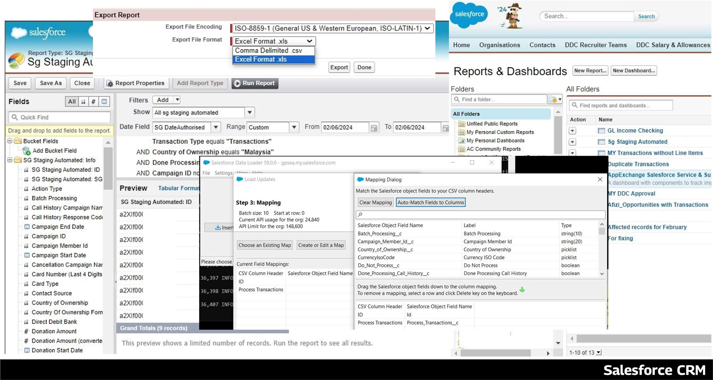
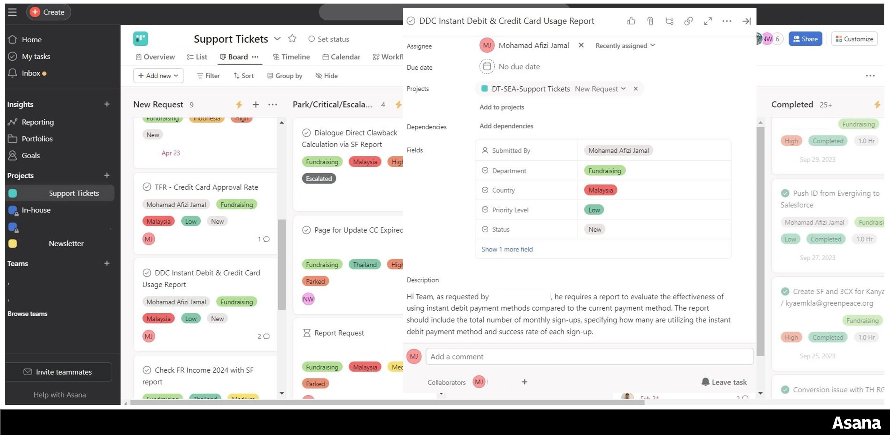
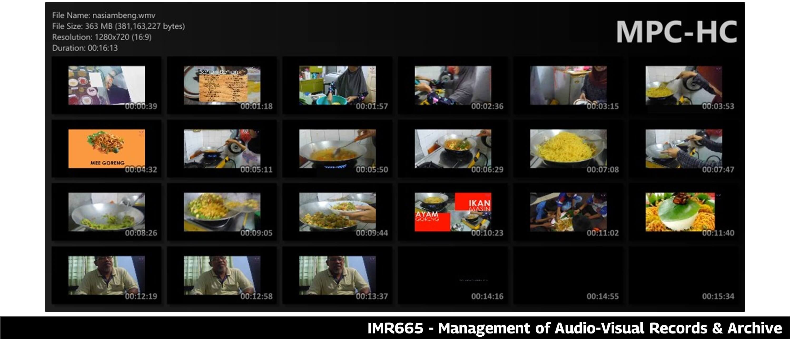
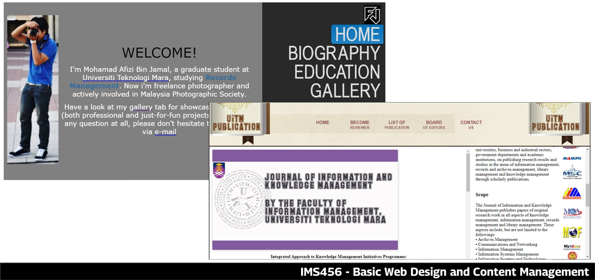
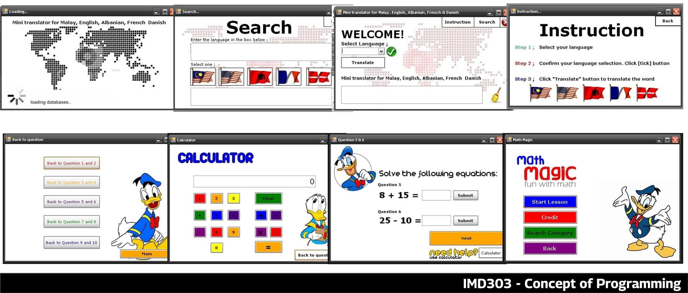
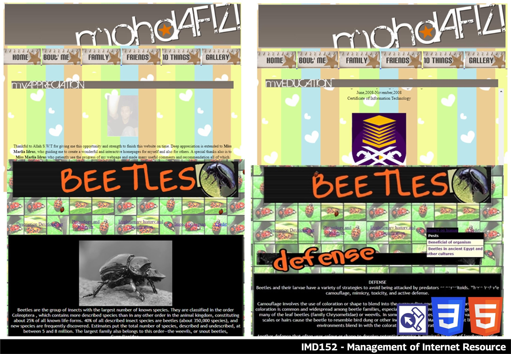

Projects / Work Samples
⬜ Besikuning Dashboard - Web Development
-
Short Description: The Besikuning Dashboard is a comprehensive, real-time information hub tailored for gold traders in Malaysia. Hosted on an AWS S3 Bucket, it integrates various widgets to deliver essential trading information and insights. Additionally, Google Analytics is utilized to monitor site traffic and user interactions, providing valuable data on site performance and user behavior.
🌐 Besikuning Dashboard Website - Skills Acquired: AWS S3, Website Design, Google Analytics.
- Technologies Used: AWS S3, Google Analytics, Third-party Widgets.
- Challenges Faced: Integrating various third-party widgets to provide dynamic content and ensuring a cohesive user experience despite not having advanced HTML skills.
- Outcome: Successfully created a well-designed and constructed website that serves as a one-stop center for Malaysian gold traders, offering dynamic content and essential tools.
- Purpose: To provide a centralized platform for Malaysian gold traders, featuring an economic calendar, trading session times, live gold prices, USD to MYR currency exchange rates, and a profit & loss calculator, leveraging the power of widgets to offer functionalities that would be complex to develop independently.
⬜ Portfolio Website - Web Development
- Short Description: Designed to showcase my expertise in HTML and CSS, this portfolio website features a clean layout with an introductory panel and a scrollable content area. Anchor links facilitate easy navigation, and the minimalist black-and-white theme emphasizes simplicity. Developed in Visual Studio Code and hosted on GitHub Pages, the site includes Google Analytics for tracking visitor traffic and user interactions, offering valuable insights into site performance and user behavior. View Code
- Skills Acquired: GitHub Pages, Website Design, Google Analytics
- Technologies Used: GitHub, Visual Studio Code, Google Analytics
- Challenges Faced: Constructing relevant content, finding free website hosting, and learning to link documents into the GitHub backend
- Outcome: Successfully created a well-designed portfolio website that serves as an online resume, highlighting my skills and achievements.
- Purpose: To publicly showcase my portfolio and explore new opportunities for full-time and part-time employment.
Portfolio
💡 Technical Skills from Work Experiences
⬜ Salesforce - Customer Relationship Management (CRM) platform
- User Support: Provides user support and training to help colleagues effectively utilize Salesforce, resolve small issues, and improve their efficiency.
- Data Management: Efficiently create, update, and manage records in Salesforce. This includes data entry, record editing, and maintaining data quality.
- Reports and Dashboards: Ability to create and customize reports and dashboards in Salesforce to provide actionable insights and analytics to the team.
- Lead and Opportunity Management: Managed leads and opportunities, including lead conversion and opportunity tracking.
- Data Import and Export: Capable in importing and exporting data using tools like Dataloader, ensuring data accuracy and consistency.
⬜ Civis Analytics – Cloud Data Analytics Platform
- Data Management: Navigating Civis Analytics platforms to access and manage data.
- Data Analysis: Able to perform simple calculations and transformations on data fields and familiar with generating basic statistical summaries and insights.
- Report Navigation: Able to locate specific information and insights within reports and experienced in customizing views and filters to focus on relevant data.
⬜ Asana – Task Management Platform
- Task Creation: Able in creating tasks within Asana to track various activities and projects.
- Deadline & Task Prioritization Setting: Skilled in setting deadlines and due dates for tasks to ensure timely completion also able to prioritize tasks based on urgency and importance, optimizing workflow efficiency.
- Collaboration & Progress Tracking: Experienced in collaborating with team members by sharing tasks, comments, and updates within Asana as well as monitoring task progress and status updates to stay informed about project developments.
⬜ Sheng Tai International Apps – Hotel Room Booking Apps
- Point of Contact and Project Involvement: As the primary liaison between users/customers, management, and apps vendor. Played a pivotal role in the development of the company's hotel booking app, participated in User Acceptance Testing (UAT), identified errors, and relayed feedback to the developer team. Additionally, managed backend administration, ensuring the accuracy and currency of user records.
- App Navigation and Customer Support: Proficient in navigating the hotel booking app, efficiently assisting customers with reservations, including browsing available properties, checking room availability, and exploring booking options. Furthermore, provide exceptional customer support by addressing inquiries, resolving issues, and managing special requests to enhance the overall user experience.
- Booking Management: Managing bookings within the app, handling new reservations, modifying existing bookings, and processing cancellations or changes requested by guests. Additionally, collaborated with hotel staff in the backend to accommodate custom bookings, ensuring a personalized and seamless experience for guests.
- Point Redemption and Property Owner Interaction: Responsible for managing point redemption within the app, accurately deducting points earned by property owners when guests redeem them for bookings, ensuring the integrity of the point system.
⬜ Standard Accounting for Government Agencies (SAGA) - Accounting Application System for Government
- Financial Reporting: Producing timely and accurate financial statements that adhere to relevant accounting standards. This involves data entry and report generation.
- Regulatory Compliance: Ensuring that financial statements are fully compliant with the accounting standards and regulations governing financial reporting.
- Technical Proficiency: Possessing the technical skills required to navigate SAGA effectively, perform basic troubleshooting, and liaise with the developer team for any issues that arise.
- Audit and Control: Implementing audit and control procedures to maintain the accuracy and integrity of financial data.
💡 Freelance & Part Time Projects
⬜ Video Editor for Etiqa Academy Corporate and Promotional Video
- Worked on a project for Etiqa Academy, where I was tasked with creating a captivating corporate videos for an event. I utilized PowerPoint for planning and organizing content, and video editing software to add visual effects, sound effect, animation to enhance professionalism. By combining these tools effectively, I was able to produce an engaging video for their event.
⬜ Computer Service & Repair
- Providing comprehensive computer service and repair solutions, including diagnostics, hardware repairs, backup, data recovery, software troubleshooting, and system formatting.
💡 Extracurricular Activities
⬜ ICT Exco for Sekretariat Mahasiswa Fakulti Pengurusan Maklumat
- In my role as the ICT Exco for Sekretariat Mahasiswa Fakulti Pengurusan Maklumat at Universiti Teknologi Mara (UiTM), I was responsible to creating and designing any media related to the event that needs to be organize. As example, i design the event poster for the booths and activities at "Karnival D' Puncak,". To achieve this, I used software like Photoshop, Illustrator, and various photo editing tools to create the visual materials. Another example is i was assigned to produce an introductory and activity videos for the association's annual meeting at the university, utilizing PowerPoint and mixed video editing tools for the creation of this video.
💡 Academic Projects
⬜ IMR665 - Management of Audio-Visual Records & Archive
- As part of the project requirements, my team was tasked with creating a video documentary about the traditional dish, Nasi Ambeng. I was responsible for editing the video, which involved adding transitions, animations, subtitles, and sound effects.(Group Project)
⬜ IMR664 - Electronic Record Keeping
- My team was assigned to create a business plan and accompanying documentation concerning electronic record keeping. We were tasked with using Kordil EDMS to manage and control documents within the organization. This system centralizes all documents into a single database, facilitating efficient management and access. (Group Project)
⬜ IMS457 - Multimedia for Information Professional
- Explore Europe through an interactive multimedia presentation, "Eurotrip." This presentation provides insights into each country's culture, landmarks, and interesting facts. Developed using Macromedia Director, it includes videos and visuals edited with Swish, Adobe Photoshop, and Illustrator. The focus is on interactivity, allowing users to engage dynamically and discover Europe's wonders. (Group Project)
⬜ IMR606 - Digitization of Records and Archives

- Developed using Microsoft Visual Basic, enables students to input personal details and experiences, seamlessly integrated with data in Microsoft Access. Tailored for employers, it serves as a tool to identify suitable candidates for job vacancies. The project's goal was to streamline the job search process, offering an efficient platform for students and employers to connect effortlessly. (Group Project)
⬜ IMA656 - Designing Instruction for E-Learners
- The "3R Awareness Multimedia Presentation" is an educational project aimed at promoting environmental awareness through the principles of "Reuse, Reduce & Recycle" (3R). Created using Macromedia Director and supplemented with tools like Swish, Adobe Photoshop, and Illustrator, this interactive presentation provides an understanding of the 3R concept. Through engaging visuals and user-friendly interfaces, viewers are enlightened about the importance of conserving resources by adopting sustainable practices in their daily lives. The project serves as a tool in advocating for environmental responsibility and empowering individuals to make informed choices for a greener future. (Individual Project)
⬜ IMS506 - Database Application for Information Management
- Contributed to the development of an electronic database application using Microsoft Access to create a Sport Centre Management System. Designed tables to store information about members, facilities, bookings, and schedules. Additionally, created queries for retrieving specific data, forms for easy data entry and viewing, and reports for summarizing center activities. This project provided me with valuable experience in database development and management using Microsoft Access. (Group Project)
⬜ IMR555 - Development of Electronic Records System
- The Mawar Intelek Tuition Centre Management System, developed using Microsoft Visual Basic and integrated with Microsoft Access, is a comprehensive software solution tailored for our client, Mawar Intelek Tuition Centre. This electronic records management system simplifies administrative tasks by providing functionalities such as registration management, subject enrollment, payment tracking, class attendance monitoring, and performance tracking. The system enhances operational efficiency and organization, facilitating seamless management of student records and academic processes. (Group Project)
⬜ IMR505 - Planning and Design of Records and Archival Repositories
- My team was assigned to develop a comprehensive business plan and supporting documentation for opening a records center. This project involved outlining all necessary steps and requirements for establishing the center. Additionally, I was responsible for designing the center's logo and creating a detailed floor plan, which I accomplished using Adobe Illustrator. This floor plan was essential for visualizing the layout and ensuring efficient use of space within the records center. (Group Project)
⬜ IMS456 - Basic Web Design and Content Management
- "My 'About Me Website' project demonstrated my proficiency in website development. Utilizing HTML, I constructed the website's framework, while CSS enabled me to apply colors and layouts. I adeptly incorporated hyperlinks for seamless page navigation and employed framesets to organize content efficiently. Additionally, I took the initiative to publish the website to a free web hosting platform (5gbfree.com), showcasing my dedication to go the extra mile in project execution. Moreover, I edited photos and videos to further enhance the site's visual appeal.(Individual Project)
- The "UiTM Publication Website" is a personal project created as per subject requirement. Utilizing frameset and CSS styling, I designed a visually appealing platform for showcasing university publications. To enhance its presentation, I incorporated edited photos and videos, enriching the user experience. Hyperlinks were strategically placed to connect users with relevant websites. Additionally, I implemented a carousel ad feature to promote university activities effectively. (Group Project)
⬜ IMR455 - Administration of Archives
- Establishment of Malaysia eBook created to commemorating Malaysia's Independence history. Creatively utilizing Photoshop, Illustrator, and free templates sourced from the internet, I crafted the e-book to resemble an actual printed publication. Through meticulous design and layout, the e-book offers an immersive reading experience. Selected as an exemplary assignment, it serves as a model for other students exploring similar projects. (Group Project) Establishment of Malaysia eBook
⬜ BJP401, BJP451 & BJP501 - Japanese Language
- As part of the project, I recorded and edited the video for the presentation. While creating the video, I ensured the audio was synchronized, added music, sound effects, animations, and video transitions, and included Japanese Romaji subtitles. (Group Project)
⬜ ETR300 - Fundamentals of Entrepreneurship
- Our group project focuses on entrepreneurship, where we learn about various aspects such as Business Planning, Market Research and Analysis, Finance and Accounting, Marketing and Sales, Legal and Regulatory Requirements, Operations Management, Leadership and Management, Customer Service, Technology and Tools, Networking and Relationship Building, and Risk Management. My task involves handling the marketing and sales components, which include creating the logo, promotional video, banner, and brochure. (Group Project)
⬜ IMD303 - Concept of Programming
- Created a Mini Translator Software using Microsoft Visual Basic, showcasing my skills in VB programming. I designed an easy-to-use interface for the translator, enabling text translation between Malay, English, Albanian, French, and Danish. To improve the software's presentation, I incorporated graphics created using Photoshop, making it visually appealing and user-friendly.(Individual Project)
- Developed “Math Magic” Application using Microsoft Visual Basic to display skills in VB programming. Designed a user-friendly interface tailored for kids, making math learning fun and engaging. The application features simple math quizzes with answer checking and total marks calculation. Additionally integrated a calculator for added utility. Inserting playful graphics created using Photoshop to enhance the software's appeal and adding to its kid-friendly vibe.(Group Project)
⬜ IMD153 - Introduction to Multimedia
- I created an 'About Me' multimedia presentation using Macromedia Director and Swish. This presentation includes photos and videos edited with Photoshop and Illustrator for a polished look. I added various animations, exploring and utilizing almost all the features Swish offers. The presentation provides insight into my background, interests, and other related information. (Individual Project)
⬜ IMD152 - Management of Internet Resources
- "About Me” Website" project, part of a subject module, showcased my skills in website development. Using HTML, I built the website's structure, while CSS allowed me to style it with colors and layouts. I mastered hyperlinks to connect pages seamlessly. Framesets helped me organize content effectively. Moreover, I edited photos and videos to enhance the site's visual appeal. (Individual Project)
- A website on 'Beetles' was created using HTML. To enhance its visual appeal, photos and videos were edited and seamlessly incorporated. The website, styled with CSS and organized with framesets, offers an immersive platform for learning about these captivating creatures. Additionally, animated buttons were implemented to increase interactivity and enrich the browsing experience. (Group Project)
Professional Development
💡 Continuous Learning
⬜ W3School
- Successfully completed the beginner Excel tutorial on W3Schools, focusing on foundational skills such as basic formulas, data organization, and simple data visualization techniques. This introductory course has equipped me with essential Excel skills, laying the groundwork for further exploration of more advanced features. 🗎 Learning Documentation
⬜ Microsoft Learn
- My profile on Microsoft Learn highlights my achievements and contributions in various Microsoft technologies, with a particular focus on Azure. It features completed learning paths, earned badges, and my active participation in the community, demonstrating my dedication to continuous learning and professional growth. 🌐 Microsoft Learn Profile
⬜ Salesforce Trailblazer
- My profile on Salesforce Trailblazer demonstrates my proficiency in Salesforce technologies, featuring completed trails, earned certifications, and contributions to the Salesforce community 🌐 Salesforce Trailblazer Profile
💡 Professional Certification
- Google Analytics for Beginners | Google Analytics Academy | 2020 | 🗎 Digital Certificate
💡 Learning Certificates
⬜ Data Analytics
- Excel Advanced Formulas and Functions: This course covers advanced Excel functions such as VLOOKUP, INDEX-MATCH, and array formulas. It focuses on data analysis, complex calculations, and automating tasks using advanced formulas| 🗎 Digital Certificate
- Power BI Essential Training: This training provides an introduction to Power BI, covering data preparation, data modeling, DAX (Data Analysis Expressions), and creating interactive dashboards and reports| 🗎 Digital Certificate
- SQL for Data Analysis: This course teaches how to use SQL for querying and analyzing data. It covers SELECT statements, JOINs, subqueries, and aggregate functions to extract insights from databases| 🗎 Digital Certificate
- Tableau Essential Training: This training focuses on using Tableau for data visualization. It includes connecting to data sources, creating various charts, building dashboards, and sharing insights| 🗎 Digital Certificate
⬜ Database
- SQL Essential Training: This course covers the basics of SQL, including writing SELECT queries, using JOINs, and performing data aggregation. It is designed for beginners to understand and navigate relational databases| 🗎 Digital Certificate
- NoSQL Essential Training: This training introduces NoSQL databases, covering their types, advantages, and how to use them for storing and retrieving unstructured data| 🗎 Digital Certificate
- Microsoft Access Essential Training: This course teaches how to use Microsoft Access for database management. It includes creating tables, queries, forms, and reports to manage and analyze data| 🗎 Digital Certificate
- Windows Server 2022 Essential Training: This training covers the installation, configuration, and management of Windows Server 2022. It includes topics like Active Directory, networking, and server maintenance| 🗎 Digital Certificate
⬜ Digital Marketing
- SEO Foundations: This course provides an introduction to Search Engine Optimization (SEO), covering keyword research, on-page and off-page optimization, and SEO strategies to improve website visibility.| 🗎 Digital Certificate
- Social Media Marketing Foundations: This training covers the basics of social media marketing, including creating content, engaging with audiences, and measuring the effectiveness of social media campaigns.| 🗎 Digital Certificate
- Digital Marketing Foundations: This course provides an overview of digital marketing strategies, including email marketing, content marketing, and online advertising to drive traffic and conversions.| 🗎 Digital Certificate
- Google Analytics 4 GA4 Essential Training: This training focuses on using Google Analytics 4 (GA4) to track and analyze website traffic. It covers setting up GA4, creating reports, and interpreting data to make informed decisions.| 🗎 Digital Certificate
⬜ Cloud Technology
- AWS Essential Training for Developers: This course covers the basics of Amazon Web Services (AWS) for developers, including cloud computing concepts, AWS services, and deploying applications on the AWS platform.| 🗎 Digital Certificate
- Azure Administration Essential Training: This training provides an introduction to Microsoft Azure, covering the management of Azure resources, virtual machines, and networking services.| 🗎 Digital Certificate
- Google Cloud Foundations: This course introduces Google Cloud Platform (GCP), covering its core services, cloud computing concepts, and how to deploy and manage applications on GCP.| 🗎 Digital Certificate
- Learning Alibaba Cloud: This training covers the basics of Alibaba Cloud, including its services, cloud architecture, and how to deploy and manage applications on the platform.| 🗎 Digital Certificate
⬜ Personal Interest
- Learning Tinkercad: This course teaches how to use Tinkercad, a 3D design and modeling tool. It covers creating 3D models, using basic shapes, and designing for 3D printing.| 🗎 Digital Certificate
- Programming Languages:
- Python Essential Training
- Android Studio Essential Training
- Visual Basic Essential Training
- PHP Essential Training
- Django Essential Training
- Flask Essential Training
- JSON Essential Training
- Building Data Apps with R and Shiny Essential Training
- Data Science and Analytics:
- Tableau Essential Training
- Learning Data Visualization
- Data Science and Analytics Career Paths and Certifications First Steps
- Learning BigQuery
- Qlik Sense Essential Training
- Adobe Analytics Essential Training
- SPSS Statistics Essential Training
- DevOps and Development Tools:
- Learning Docker
- Learning Git and GitHub
- Learning Kubernetes 2018
- Learning PowerShell
- IT Service Management:
- Learning ITIL
- Learning ServiceNow
- Microsoft Ecosystem:
- Microsoft Power Platform Foundations
- Microsoft Dynamics 365 Sales Essential Training
- Learning Microsoft Project
- ERP and CRM Systems:
- Salesforce Essential Training
- SAP ERP Essential Training
- SAP S4HANA Essential Training
- Accounting and Finance:
- QuickBooks Online Essential Training
Summary
This website created to serves as evidence of my continuous professional growth showcasing a range of applications and software used along with the skills and achievement gained throughout my university years all the way to my current position.
I am committed to continuous learning and growth, actively pursuing opportunities to expand my skill set through specialized training programs, certifications, and hands-on projects. Explore my portfolio to discover specific projects, achievements, and examples of my work demonstrating my capabilities and potential for collaboration.
Skill Sets
| Category | Skills |
|---|---|
| Computer Skills |
|
| Technical Skills | Computer Maintenance and IT Support: Hardware Diagnostics, System Repair, OS Installation and Configuration, System Troubleshooting, Data Backup and Recovery, Driver Management, Technical Support |
| Information Management Skills | AACR2, ISBD, ISAD-G, Dublin Core and ICD-10 |
| Communicative Skills | Proficient command and writing skills in both English and Malay, with conversational ability in Japanese. |